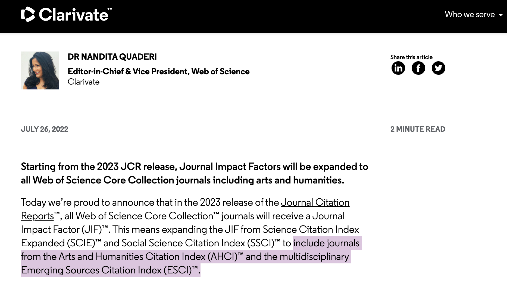
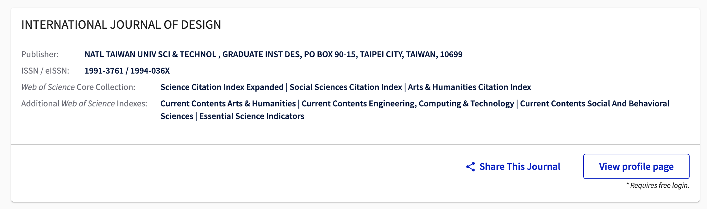
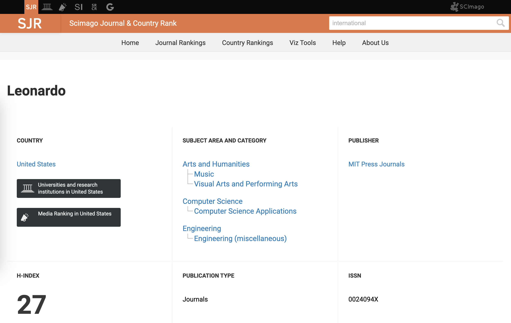
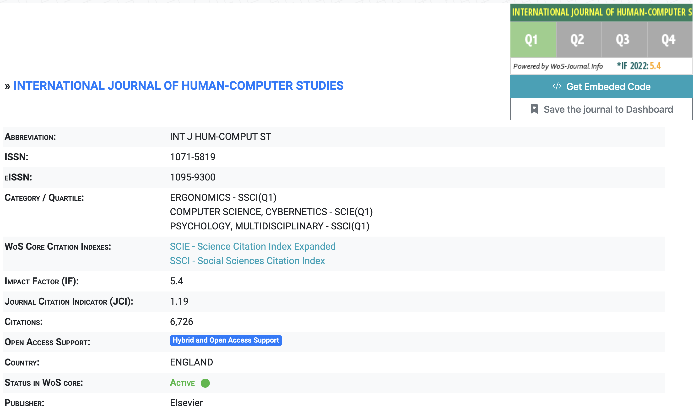

SCI(E)/SSCI/AHCI/Q1Q2Q3Q4
都是什么？
SCI的说法估计都听说过，SSCI和AHCI估摸着也差不太多，就算不知道什么意思但总是见过；分区的说法，中科院一二三四区似乎也到处看到，似乎一会儿Q1一会儿Q2，标准还各不一样，翻来覆去各种重叠的标准和并行的体系。面对这个实在芜杂的系统，全部搞清楚不容易，但最近似乎捋清了我必须搞明白的那一部分，以下为结论。
这里主要包括了（1）SCI/SCIE/ESCI/SSCI/AHCI分别是什么，以及其他类似的Scopus等；（2）期刊排名Journal Ranking或者说Metrics e.g., JIF, citescore 和 SJR等。
CLARIVATE (WEB OF SCIENCE) vs. ELSEVIER SCOPUS
首先是CLARIVATE vs. ELSEVIER。前者的database（或者称之为榜单更合适）即 Web of Science Core Collection，包含 “23,000 journals, but only 12,600 of these have Impact Factors （as per 2019）”。WoS Core是最大的“榜单”，其中又分为SCIE和SSCI，当然还有额外的AHCI和ESCI一共四个“榜单”。而后者对应的最大的集合是Scopus。另外，CLARIVATE的前身是Thomson Reuters，有些地方也未作更新比较让人困惑。。。大家标榜一个期刊好常常以是否在这些“榜”上有名为准，当然在榜的期刊自然还有“榜上排名”的问题——即他们之间的优劣关系，就是分区的说法由来。我们先甄别这些榜单。
第一个要辨别真伪的是SCI vs. SCIE vs. ESCI, 主要是名字太接近。简单总结就是（1）SCI等同于SCIE，并且CLARIVATE官方只称SCIE，但大家继承过往经验（和可能更简单？）称SCI。历史沿革和两者的存储方式不同不论，可以很安全地将两者等效（2）ESCI同为CLARIVATE家榜单可以很清晰地和SCI比较 - SCIE榜单比ESCI高级两者不重叠，从ESCI进入SCIE是升级；有称之为“预备役SCI”的，或许不够准确。如果要求高，ESCI的期刊应不予考虑。
然后，SSCI - Social Science Citation Index，在CLARIVATE 2022年以前的体系里和SCI并列而专注于social science 按国内的说法就是人文社科（可能包括艺术：）的SCI；（2022年以前，）只有SCIE和SSCI有Impact factor（影响因子）和分区排名。为什么强调2022这个时间分水岭？因为从2023年开始，AHCI和ESCI都开始有IF （应该也会有分区）。

来自 clarivate.com 网站截图
再是AHCI和ESCI，ESCI最简单粗暴的处理方式就是不予考虑和记着它是low-tier。AHCI - Arts and Humanities Citation Index 应该是艺术类比较合适参考的“榜单”，因为艺术虽然人文，但其实和社科（SSCI）也差着一个“科学” ：） 从2023开始，AHCI榜内排名参考JIF即可（当前可能好些第三方查询工具还没有更新），按从前办法可参考其他家例如Scopus对应的citescore去看排名甄别优劣。
一个值得注意的特征是SCIE，SSCI和AHCI可以重叠，即一个期刊可能被同时收录至多个榜单；例如 INTERNATIONAL JOURNAL OF DESIGN 同时是SCIE，SSCI和AHCI收录期刊。

来自Master Journal List - mjl.clarivate.com 网站截图
最后，也不止是CLARIVATE一家做榜单，评价标准和期刊排名，ELSEVIER家的Scopus 榜单（database）是另外一个可以辅助参考的体系。Scopus内未有进一步的细分。其他榜单可以参见：https://libguides.library.cityu.edu.hk/researchimpact/other-journal-ranking-tools 我们关注的期刊质量保障直接以是否入选SCIE/SSCI/AHCI衡量即可。那么上榜期刊如何鉴别优劣呢？
Metrics，排名和分区
前面已经提到，CLARIVATE / WoS的量化评价标准是Journal Impact Factor（简称JIF）从前只有SCIE和SSCI有JIF，IF的排名即分区——按排位百分比25%一档分为Q1～Q4；在AHCI没有IF的年代可以参考基于Scopus榜单的数据和评价标准cite score，而对应的排名体系为SCImago Journal Ranking （SJR）。虽然WoS以后也可以AHCI排名，但是SJR免费开放，可以直接在 https://www.scimagojr.com/ 网站查询。
比较合适的查询方法是在 Web of Science 的 Master Journal List (mjl.clarivate.com) 上查询是否为SCIE，SSCI和AHCI收录（indexing）。但由于WoS提供的JIF记录查询为收费服务，如果没有access，可以在 SCImago https://www.scimagojr.com/ 上查询分区。因为两个公司商业兴趣竞争关系，无法从各自官网查到对方公司的indexing和ranking。其他第三方服务例如 https://academic-accelerator.com/ 和 www.resurchify.com 也可以查询相关信息，但数据准确性可能更新不及时。
有了评价标准的认知，其他的排序和分区说法都可以类比理解，无非是原始数据来源和评价体系的区别。例如，SOURCE NORMALISED IMPACT PER PAPER (SNIP)是基于Scopus的数据以某种算法衡量期刊的优劣。对于未知期刊可以JIF和citescore（SJR）同时参考和比较，当然首先应以SCIE/SSCI/AHCI为准入门槛。另外，Google 的 h-index 由于完全基于数据衡量，某种程度上可能更加客观；但更多地可能在科学技术领域被看重，艺术大类的期刊 h-index 都挺低，因而不很有参考价值。
Category和评价体系的问题
另外，两个重要的点（1）同一期刊在不同子领域分区很可能不同，需要关注自己的研究领域 （2）在固定子类研究领域的前提下，同一期刊在不同的评价体系内也有可能不同，这应该很好理解——因为评价标准不同。

来自 www.scimagojr.com 网站截图
例如，Leonardo是AHCI，没有JIF而看它的citescore对应的SJR的排序，在Visual Arts and Performing Arts子类是Q1，但是Computer Science Applications子类是Q4。而不同评价体系和标准问题，根据自己情况例如是否需要关注中科院分区，行业内的口碑和名气等都可以综合考虑。
目前来看，我没有看到很“艺术”的SCIE期刊，我可能搭上边儿的SCIE期刊大都是human computer interaction类或者Multimedia。

来自 wos-journal.info 网站截图
例如 International Journal of Human-Computer Studies【SCIE/Q1】因为Edmond Ernest的"From Rituals to Magic: Interactive Art and HCI of the Past, Present, and Future"就是发在了IJHCS上。）或者 Interacting with Computers （SCIE Q4），Journal on Multimodal User Interfaces （SCIE Q4）。
再或者multimedia类的：MULTIMEDIA TOOLS AND APPLICATIONS （SCIE Q2），Multimedia Systems？（SCIE Q1）。更多的可能期刊列表还在研究中，或许另写一篇。
Jul 23， 2023 南沙。